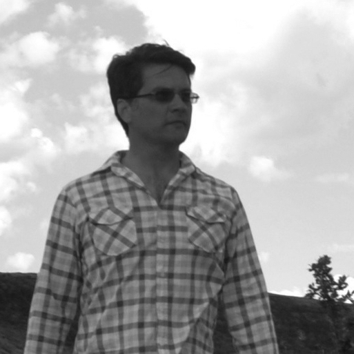
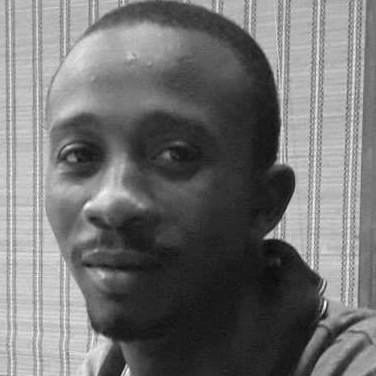
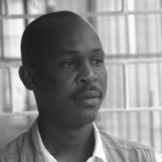
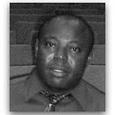

ANCIR’s iLab provides grantees, collaborators, partners and formalised members with round-the-clock investigative
support services. This includes editorial, cross-examination, data, technology, forensics, financial and other
services to assist in addressing and resolving investigative queries.
To access the iLab, just email your inquiry to our contact at
ilab@investigativecenters.org. We will respond to
all contact requests within 36 hours.
What kind of support is available?
Examples of inquiries may range from tracing metadata of documents and encrypting emails to identifying beneficial
owners in opaque corporate vehicles.
The service underpins and complements Investigative Dashboard Africa (ID) service which provides free data from over
400 databases in 120 jurisdictions.
If you are interested in iLab services for a special project, please email
ilab@investigativecenters.org with special project, your institute/media house and theme in the
subject title.
Who is providing support?
Our staff is comprised of core people who are also ANCIR’s trainers and contributors on in-house projects and
collaborations.
Beyond this, iLab has a broad network of experts in the Maghreb, as well as Francophone and Lusophone regions that
can be called upon for a variety of investigative bottlenecks ranging from extractive industries to climate, aviation,
maritime and other queries.
Amanda Potgieter
Amanda Potgieter, managing editor for ANCIR, started working in media 10 years ago at a campus radio station. Since then, she has worked across a number of media, night editor at the Mail & Guardian. She also worked as head of research for sub-Saharan Africa at JLL. In a moment of insanity, she quit her day job to freelance full time and return to her first loves: writing and editing.
Cross-examination advisor: Heinrich Böhmke

Heinrich Böhmke is an experienced trainer and director at the Specialised Skills Institute of SA. He is also an investigator and litigator with experience in prosecuting public and private sector corruption and sexual misconduct matters among other investigations in South Africa. In 2013, Bohmke adapted the courtroom method of interrogating narratives and witnesses for investigative journalists and editors.The courses has been presented multiple times across Africa including South Africa, Kenya, Nigeria, Uganda as well as Senegal and Ghana.
Joshua Olufemi

Joshua Olufemi is the head of knowledge and innovation unit of Premium Times where he leads on digital innovations and knowledge development. He doubles as the Program Manager of Premium Times Centre for Investigative Journalism (PTCIJ) where he coordinates grant management, program development and implementation. Mr. Olufemi has done great data-driven investigations and reporting of corruption, failure of regulatory agencies, and human rights abuses and is dedicated to a achieving a better society where justice and fairness prevails. He has a Bachelor’s degree in Economics and Education from Olabisi Onabanjo University (OOU) and Master’s degree in Measurement and Evaluation from University of Lagos (UNILAG) aside other professional certificates to his credit.
Luis Nhachote

Luis Nhachote is an award-winning investigative journalist, editor and researcher, specialising in organized crime and the extractive industries. Formerly a consultant for Chatham House (UK), Center for Public Integrity (Mozambique) and Executive Director of the Center for Mozambican and International Studies (CEMO), Nhachote has also worked as a senior investigator for the country’s leading publications including Savannah, Canal de Moçambique etc, for almost two decades. A contributor to international media such as amaBhungane, the Mail & Guardian’s investigative unit, where Nhachote completed an internship, he also speaks several languages including Portuguese, French and English. He is currently the editor-in-chief of Confidencial, Mozambique’s new online daily and ANCIR’s iLab country expert.
Stephen Abbott Pugh
Stephen Abbott Pugh is an ICFJ Knight international journalism fellow and engagement strategist at Code for Africa. Abbott Pugh is a digital journalist and project manager who has helped shape and deliver the digital and outreach strategies for two of the UK’s most high-profile websites. He is an expert on how technology and connectivity can revolutionize the way stories are told, information is shared and change is delivered. Based in Rwanda, Abbott Pugh co-founded Tumenye, a civic technology company in 2014, and launched sobanukirwa.rw, the country’s first access-to-information website in partnership with a local civil society organisation.Previously, Abbott Pugh worked as an executive producer at The Guardian and as head of digital projects for the UK Parliament. Abbott Pugh worked as a digital advocate leading initiatives to discover new audiences by harnessing online tools and using data in a citizen-centric way.
Tiziana Barghini
Tiziana Barghini has been a reporter and an editor working for Reuters in Europe and in the United States for more than 25 years. Tiziana reported on financial crisis, corporation battles, mobsters, popes, and politics but she has a particular focus on finance and economic. She has been editor for Southern Europe at the outset of the financial crisis and, later, economic editor in New York City. Tiziana has a Master degree in Economics from Bocconi University in Milan, plus study of Journalism and Business at Stanford University. She is fluent in Italian and Spanish.
Yaffa Fredrick
Yaffa Fredrick is managing editor of World Policy Journal, a leading foreign policy magazine published in New York, NY and an iLAB editor. At any given time, she works with a dozen writers across six continents producing original reportage in print and online form. Since beginning her career at WPJ, Yaffa has edited a variety of long form investigative articles, ranging from an illicit tri-continental scheme selling blood diamonds to China's subtle but precarious entrance into Italian manufacturing and power companies. Before joining WPJ, she worked for PBS and MTV International, producing award-winning segments on vigilante female justice groups in India, election fraud in Florida, gang violence in Chicago, and the growing refugee crisis in Syria. Yaffa is also a member of the Overseas Press Club in New York and the World Economic Forum in Geneva. She leads ANCIR's podcast, Africa Investigates.
iLAB Editor: Khadija Sharife
Khadija Sharife is an African investigative researcher and writer. She helps coordinate the African Network of Centers for Investigative Reporting (ANCIR), Investigative Dashboard (Africa), and the EU-funded Environmental Trade and Liability (EJOLT). She is a fellow to the World Policy Institute and contributor to the Tax Justice Network (Africa). She has published in a number of academic and mainstream media including Africa Confidential and the World Policy Journal. During the past year, she has helped uncover billions of dollars in mispriced minerals from African countries including South Africa, Angola, Zimbabwe among others. Her specialisation is financial opacity, political ecology and corruption. She is based in South Africa.
Silas Gbandia

Silas Gbandia is an investigative journalist based in Sierra Leone. He is the founder of the newly established Center for Investigative Journalism in Sierra Leone (CIS-SL) and the iLab country-based researcher. With over a decade-long experience in print, radio and digital platform, Gbandia is currently a correspondent for Bloomberg News, contributing to a host of international publications including the Christian Science Monitor (US), Le Monde Diplomatique (France), World Policy Journal (US), Equal Times (Belgium), among others. He is fellow of the Center for International Media Ethics (CIME) and holds a postgrad diploma in Mass Communication from Fourah Bay College and a Masters in Peace and Development Studies from Njala University.
Investigative advisor: Mark Schapiro
Mark Schapiro has been an environmental journalist for three decades, exploring the intersection between the environment, economics and international political power in books, magazine articles and on television. He was, until recently, the senior correspondent at the Center for Investigative Reporting, the oldest non-profit investigative journalism organization in the world. His reporting probes into the underlying economic and political forces behind environmental abuses.
Data advisor: Adi Eyal
 Adi Eyal
founded Code for South Africa because he has a strong belief that
many of the world's problems can be solved through data. As with
sculptors who see a beautiful statue within a lump of rock. he beliefs
that there are diamonds to be found within even the most boring of
datasets. His mission, and that of Code for South Africa is to help
media and civil society to combine technology and data to promote
informed-decision making and drive social change. Code for South
Africa has been developing tools to help ministries of health save
money on their pharmaceutical purchases, working with journalists to
better understand unwieldy datasets such as the census and elections
results as well surfacing useful information on laws, medical
information, elections and other topics of interest. Under the
umbrella of the HacksHackers group of data journalism enthusiasts,
they are bringing together journalists and technologists to promote
collaborative work. In 2015, they are opening a data journalism school
to enrich the next generation of young journalists with the skills
they need to succeed in the modern newsroom.
Adi Eyal
founded Code for South Africa because he has a strong belief that
many of the world's problems can be solved through data. As with
sculptors who see a beautiful statue within a lump of rock. he beliefs
that there are diamonds to be found within even the most boring of
datasets. His mission, and that of Code for South Africa is to help
media and civil society to combine technology and data to promote
informed-decision making and drive social change. Code for South
Africa has been developing tools to help ministries of health save
money on their pharmaceutical purchases, working with journalists to
better understand unwieldy datasets such as the census and elections
results as well surfacing useful information on laws, medical
information, elections and other topics of interest. Under the
umbrella of the HacksHackers group of data journalism enthusiasts,
they are bringing together journalists and technologists to promote
collaborative work. In 2015, they are opening a data journalism school
to enrich the next generation of young journalists with the skills
they need to succeed in the modern newsroom.
Data advisor: Friedrich Lindenberg
Friedrich Lindenberg is a news technologist with Code for Africa. He is also a coder and data ournalist interested in how web technology can be utilised to create new narrative and investigative techniques. He was a 2013 Knight-Mozilla OpenNews Fellow at Spiegel Online. Previously, he contributed to various projects at the Open Knowledge Foundation, including OpenSpending, a platform that helps citizens across the world keep track of government finance.
Digital security advisor: Giovanni Pellerano
Giovanni Pellerano
is a computer engineer and security advisor;
Passionate security researcher and software developer he is active in
various free software communities like Tor2web, Sniffjoke and Contiki.
His career started as a security researcher in 2009 at ISGroup. In
2012 he worked at CNIT National Laboratory of Photonic Networks (LNRF)
as a consultant in the field of the Internet of Things (IoT).
Transparency advocate and privacy activist, in 2012 he co-founded the
Hermes Center for Transparency and Digital Human Rights where he
currently leads the development of GlobaLeaks, a framework for secure
whistleblowing initiatives.
Christopher Shay
 Christopher Shay is editor of World Policy Journal, a 33-year-old international affairs quarterly that publishes investigative journalism and analysis from around the globe. Prior to WPJ, Shay was a digital news editor at Al Jazeera America and a reporter at TIME Asia. His work has appeared in the Far Eastern Economic Review, Wall Street Journal, and elsewhere, and his reporting on the trafficking of Cambodian men onto Thai fishing boats earned the Phnom Penh Post its first ever SOPA award. He joins the iLAB as a special projects editor.
Christopher Shay is editor of World Policy Journal, a 33-year-old international affairs quarterly that publishes investigative journalism and analysis from around the globe. Prior to WPJ, Shay was a digital news editor at Al Jazeera America and a reporter at TIME Asia. His work has appeared in the Far Eastern Economic Review, Wall Street Journal, and elsewhere, and his reporting on the trafficking of Cambodian men onto Thai fishing boats earned the Phnom Penh Post its first ever SOPA award. He joins the iLAB as a special projects editor.
Lawrence Seretse
Lawrence Seretse is the editor ef The Botswana Gazette and an investigative journalist and researcher. The youngest editor in Botswana, Seretse is part of the Oxpeckers Environmental Investigative Journalism, and frequently publishes in a host of international media such as the Mail & Guardian. A contributor the Wealth of Nations project (Thomson Reuters Foundation), Seretse's blockbuster investigations range from canned hunting and tax avoidance to illegal and anti-competitive retail activities.
Become an iLab team member!
If you are interested in becoming part of the iLab network as contributing expert, please email ilab@investigativecenters.org
with your country and expertise in the subject title, including a resume, samples of work, and a cover letter.